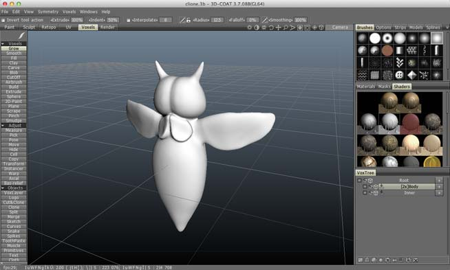
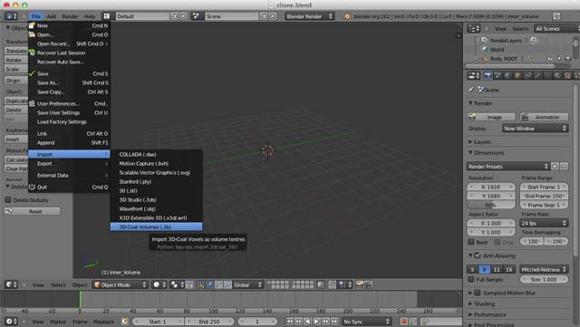
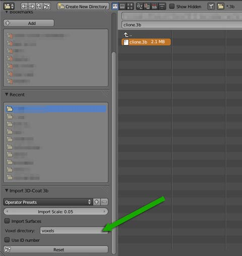
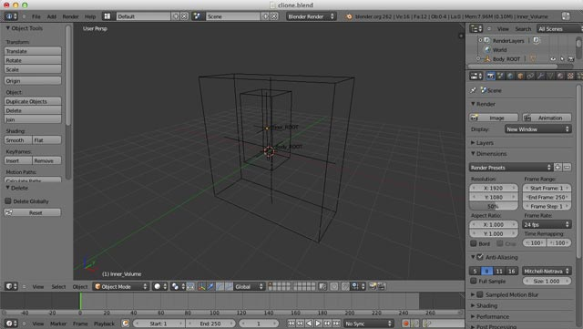
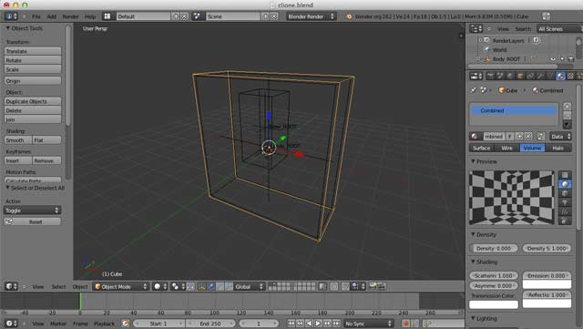
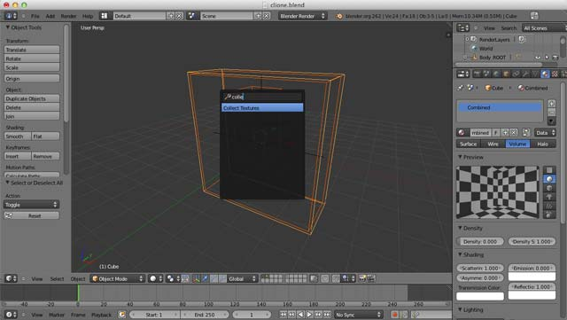
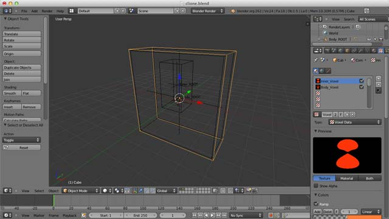
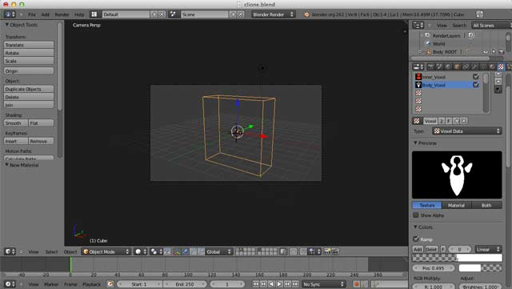

Blender import tutrial
Now, I have a 3D-Coat scene like this.

Import
Now, launch Blender that has already installed addon and save blend file before import 3b file.
This addon converts 3b's voxel objects to blender readable voxel format and export it to inputed directory.
Voxel data export directory name is input from import option. and create it if not exist.


Imported object may be like this.

Recommends fix volume texture settings
Current version's Blender (2.6.2) cannot render intersected volume material objects well.
I recommend to combine these volume textures. This addon includes simple tool "Collect Textures" to do it.
- Add a new mesh object (like a cube) and resize it to cover all volume objects.

- Create and assign new Volume material. It's density value set to 0.0. This setting is same as other imported objects.
- Select imported volume objects and created one. The created one must be active object.
- Hit Space key and input "Collect Textures". Click a search result to exec command.

- Now the mesh will hold all selected volume textures.

render only this object.

WARNING: Blender has only 18 textures at one material. If over flow, You should union some voxels in 3D-Coat or composite in post process.